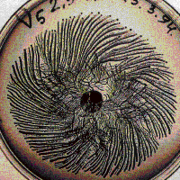

|  |
|
| When the C morphotype are grown in low nutrient and hard agar, the vortex V morphotype can arise. | |||
| The colonies grow by the movement of bacteria droplets, filled with bacteria spinning around a common center. | |||
| Smaller droplets explore the space left by the larger, leading droplets. | |||
| |||
| Click each picture to enlarge in a new window. |
Return to bacteria growth in stressed environments.